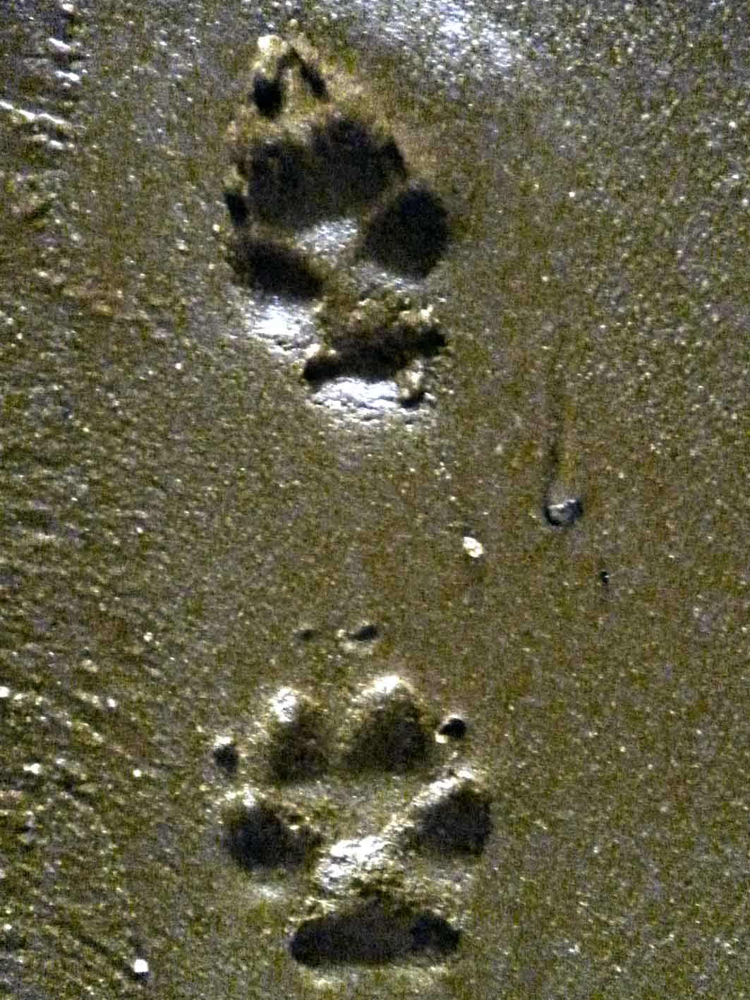

Ignoras el llamado del cuervo y te enfocas en las huellas. Necesitás saber con quién compartís este territorio. Si hay otro zorro aquí, es mejor saberlo ahora que encontrarlo por sorpresa después.
Sigues las marcas en la tierra. Son frescas, de esta mañana. El otro zorro es grande, probablemente macho, y marca su territorio con confianza. Esto es su hogar y lo defiende.
Las huellas te llevan a una zona rocosa. Ahí, descansando sobre una piedra plana, lo ves. Es un zorro rojizo, más grande y fuerte que vos. Te ha estado observando desde hace rato.
Se levanta lentamente, sin hostilidad pero tampoco con bienvenida. Este es su territorio y vos sos el intruso. Sus ojos te evalúan: ¿sos una amenaza? ¿Sos débil? ¿Qué querés aquí?